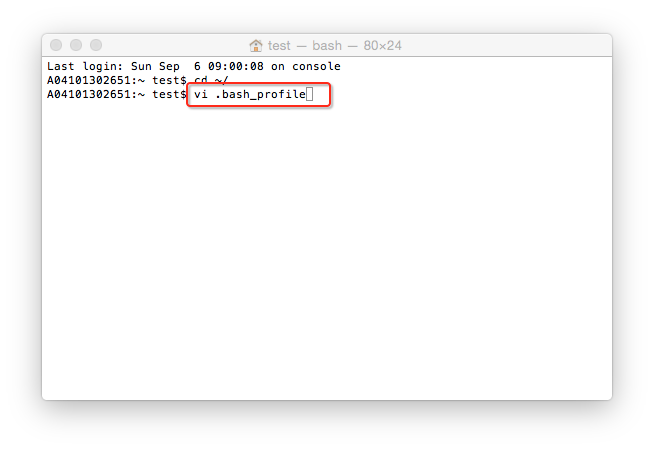
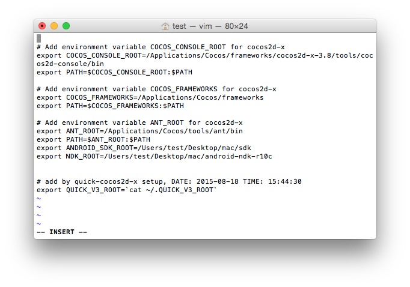

Cocos Framework Test使用文档
一 使用前提
1 安装相应版本的Cocos Framework
2 Tests的zip包可解压到任意路径下（但路径不能包含中文及特殊字符）
3 配置开发环境
MAC下环境配置
(1) 安装新版本Xcode
(2) 系统中有可用的浏览器（Firefox，Chrome，Safari等任一个）
(3) 配置安卓开发环境
a) 安装JDK
b) 下载NDK和安卓SDK，并解压
c) 设置NDK_ROOT和ANDROID_SDK_ROOT，方法如下所示：
i) 打开终端命令行，输入:cd ~/
ii) 然后输入:vi .bash_profile，回车进入vi编辑文档页面

然后在文件结尾加入如下两行：
export ANDROID_SDK_ROOT=
export NDK_ROOT=
在=的后面加入SDK和NDK的路径即可

iii) 保存退出，重启终端，即可完成安卓环境的配置
Windows下环境配置
(1) 安装新版本 Visual Studio
(2) 系统中有可用的浏览器（Firefox，Chrome，Safari等任一个）
(3) 配置安卓开发环境
a) 安装JDK，并配置Java环境
b) 下载NDK和安卓SDK，并解压，然后设置ANDROID_SDK_ROOT和NDK_ROOT
右键计算机——>属性——>高级系统设置——>环境变量——>新建
如下所示：
变量值分别为SDK和NDK解压后的绝对路径
二 Tests.zip包中的内容
zip 包中包含 cpp-tests, js-tests, lua-tests 三个工程。
三 使用方法
命令中的TESTS_PATH 是test项目解压后的绝对路径，取决于用户的解压路径，如笔者的解压后的如下图所示:
则相应的命令执行就是：
cocos run -s /Users/test/Downloads/Tests-V3.8/tests/cpp-tests -p ios
1 MAC平台测试
在终端执行如下命令：
//执行此命令，编译cpp-tests示例项目，在ios模拟器运行
cocos run -s TESTS_PATH/tests/cpp-tests -p ios
//执行此命令，编译cpp-tests示例项目，在mac平台运行
cocos run -s TESTS_PATH/tests/cpp-tests -p mac
//执行此命令，编译cpp-tests示例项目，在安卓手机上运行
cocos run -s TESTS_PATH/tests/cpp-tests -p android
//执行此命令，编译js-tests示例项目，在ios模拟器运行
cocos run -s TESTS_PATH/tests/js-tests -p ios
//执行此命令，编译js-tests示例项目，在mac平台运行
cocos run -s TESTS_PATH/tests/js-tests -p mac
//执行此命令，编译js-tests示例项目，在安卓手机运行
cocos run -s TEST S_PATH/tests/js-tests -p android
//执行此命令，编译js-tests示例项目，在浏览器运行
cocos run -s TESTS_PATH/tests/js-tests -p web
//执行此命令，编译lua-tests示例项目，在ios模拟器运行
cocos run -s TESTS_PATH/tests/lua-tests -p ios
//执行此命令，编译lua-tests示例项目，在mac平台运行
cocos run -s TESTS_PATH/tests/lua-tests -p mac
//执行此命令，编译lua-tests示例项目，在安卓手机运行
cocos run -s TESTS_PATH/tests/lua-tests -p android
2 Windows平台测试
在命令行执行如下命令：
//执行此命令，编译cpp-tests示例项目，在安卓手机运行
cocos run -s TESTS_PATH/tests/cpp-tests -p android
//执行此命令，编译cpp-tests示例项目，在windows平台运行
cocos run -s TESTS_PATH/tests/cpp-tests -p win32
//执行此命令，编译cpp-tests示例项目，在安卓手机运行
cocos run -s TESTS_PATH/tests/js-tests -p android
//执行此命令，编译js-tests示例项目，在windows平台运行
cocos run -s TESTS_PATH/tests/js-tests -p win32
//执行此命令，编译js-tests示例项目，在浏览器中运行
cocos run -s TESTS_PATH/tests/js-tests -p web
//执行此命令，编译lua-tests示例项目，在安卓手机运行
cocos run -s TESTS_PATH/tests/lua-tests -p android
//执行此命令，编译lua-tests示例项目，在windows平台运行
cocos run -s TESTS_PATH/tests/lua-tests -p win32
以上每一条命令都应该可以正常编译运行相应的测试例工程。
四 Q&A
1 Cocos Framework版本和Tests包版本不匹配会编译不通过
2 电脑上未安装Cocos Framework，命令无法被执行
3 在执行安卓命令时，需将手机连接电脑，并打开usb调试
3 在执行ios命令时，系统会启动ios模拟器运行示例项目
扫描二维码或在微信中搜索 KeepMovingXin